Fonte: Cleia Viana / Câmara dos Deputados (CC BY-SA 4.0)
Quem fala
Ailton Krenak
1953
Nasce no vale do rio Doce, território do povo Krenak (MG), região marcada pela mineração
1970–80
Liderança do movimento indígena; ajuda a criar a União das Nações Indígenas
1987
Discursa na Constituinte pintando o rosto de jenipapo em defesa dos direitos indígenas
1988–89
Conquista do “Capítulo dos índios” na Constituição; organiza a Aliança dos Povos da Floresta
2005
Coautor da proposta da Reserva da Biosfera da Serra do Espinhaço (Unesco)
2016
Doutor honoris causa pela Universidade Federal de Juiz de Fora
2019
Publica Ideias para adiar o fim do mundo; em 2023 é eleito para a Academia Brasileira de Letras
Dados: “Sobre o autor”, p. 41, e registros públicos
A humanidade
O rio é alguém
Fundão e o Estado
A queda e os paraquedas
O livro
Por onde o livro nos leva
Somos mesmo uma humanidade?
A ideia de humanidade nos separou da Terra. Quem ficou agarrado nela virou sub-humanidade, e a narrativa globalizante foi apagando línguas e modos de vida.
p. 7-16
se não somos isso, somos o quê?
Tudo é natureza
Então o rio também é alguém: o Watu, avô dos Krenak. Tirar a pessoa do rio é o primeiro passo para ele virar recurso, e depois resíduo.
p. 10-15, 21-24
e quando os dois mundos se encontram?
Um mundo acabou
Fundão: o mesmo rio em duas línguas, e só uma entra no laudo. O Estado decide quem existe, de 1808 a 2025. O fim do mundo já aconteceu, várias vezes.
p. 20-25, 34
então acabou?
Cair, com paraquedas
Aceitar a queda, sonhar como quem estuda, contar mais uma história. E o que isso pede de quem guarda e organiza informação.
p. 29-34
o que a gente leva daqui?
Cada curva deixa uma pergunta no ar, e a seguinte começa por ela. É assim que o livro anda: não prova, conduz.
A humanidade
O rio é alguém
Fundão e o Estado
A queda e os paraquedas
A humanidade que pensamos ser
O clube da humanidade
Figura 2 – “O fardo do homem branco”: a civilização carrega os “bárbaros” morro acima
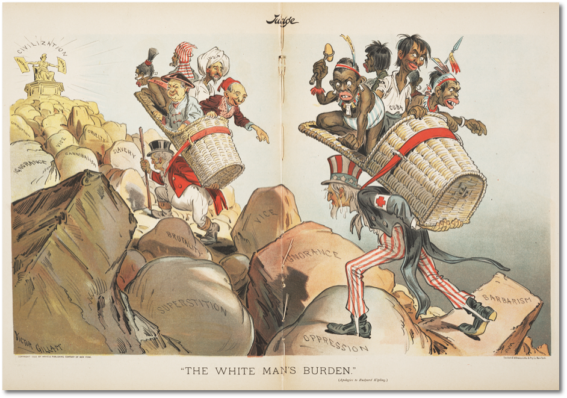
Fonte: Victor Gillam, revista Judge, 1899 (domínio público)
“Por que insistimos tanto e durante tanto tempo em participar desse clube?”
Krenak, p. 8
colonizar
“iluminar” os obscurecidos
modernizar
tirar da terra, jogar na periferia
ficar na terra
virar sub-humanidade
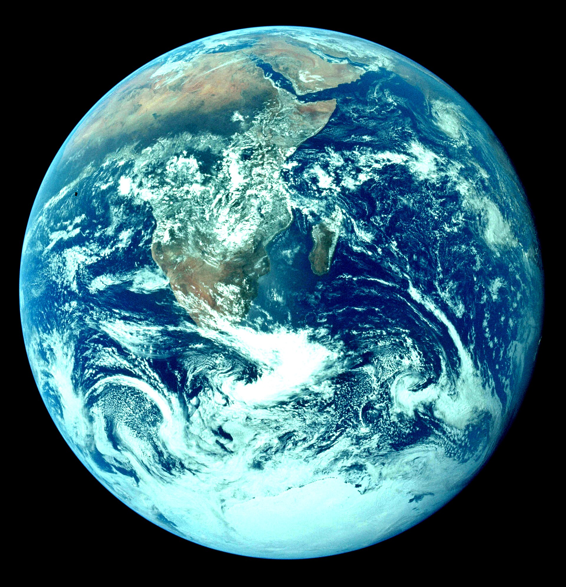
A humanidade
O rio é alguém
Fundão e o Estado
A queda e os paraquedas
A humanidade que pensamos ser
“Tudo é natureza. O cosmos é natureza.” Krenak, p. 10
Figura 3 – Mulher hopi, 1906 (imagem ilustrativa)
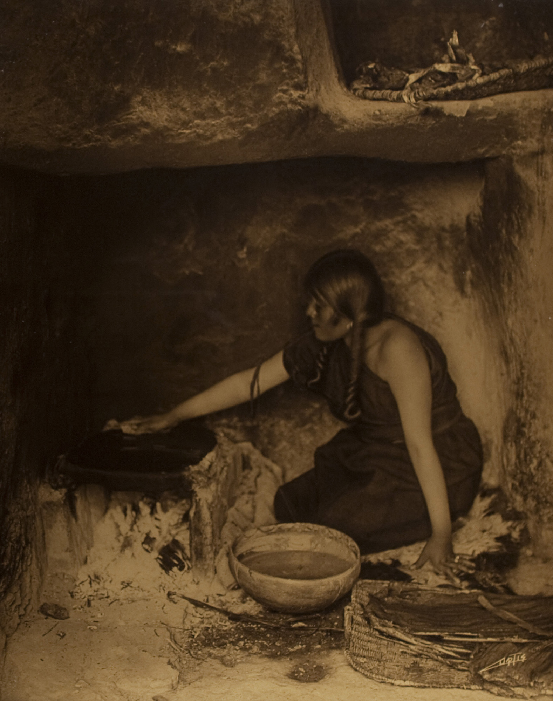
A anciã conversa com uma pedra
O pesquisador espera ela terminar. “Mas é uma pedra.” “Qual é o problema?”
Fonte: Edward S. Curtis, The Piki Maker (domínio público)
Figura 4 – Massai diante do Ol Doinyo Lengai, a “Montanha de Deus”
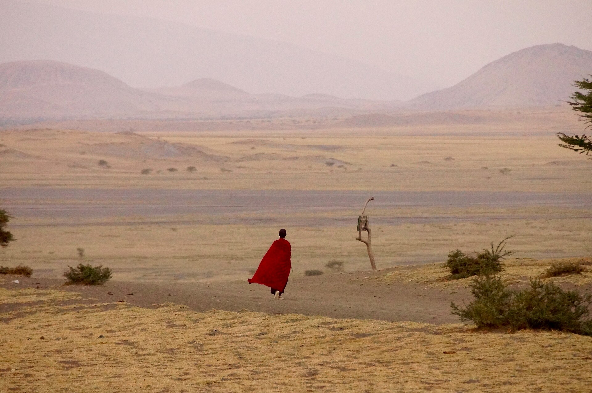
Os Massai recusam o parque
“Começa como parque e termina como parking.” (p. 11)
Muitas visões de um só mundo. A diferença está na mente. Tolerar o outro é tolerar uma opinião.
Consequência: o rio é um só, o da hidrologia. O que os Krenak dizem dele é “cultura”, “crença”, “folclore”.
UMA condição de pessoa: ver-se como gente
corpo humano
corpo de onça
corpo de urubu
veste um corpo
e então vê
sangue
cauim (cerveja)
peixe assado
Um só olhar, muitos mundos. A diferença está no corpo. O outro não tem uma opinião: tem outro mundo.
Consequência: o rio da empresa e o Watu não são dois nomes do mesmo rio. São dois rios.
MULTICULTURALISMO (o nosso)
MULTINATURALISMO (ameríndio)
Viveiros de Castro, 2004, p. 239-240. Krenak, p. 15: os humanos não são os únicos seres com uma perspectiva sobre a existência.
A humanidade
O rio é alguém
Fundão e o Estado
A queda e os paraquedas
Perspectivas
“Uma montanha não fala nada”
O que os vizinhos da aldeia dizem
rio
recurso hídrico
Que o rio seja sagrado é folclore. Que a serra avise a chuva, bobagem: montanha não fala.
Conhecer = objetivar.
O que os Krenak fazem
serra
alguém que avisa
Olham para a Takukrak de manhã e decidem o dia a partir do humor dela. O rio é avô, com quem se tem obrigações.
Conhecer = personificar (Viveiros de Castro).
Não é metáfora nem crença: é outro modo de saber.
A humanidade
O rio é alguém
Fundão e o Estado
A queda e os paraquedas
Perspectivas
A máquina do fim do mundo, e a saída
O clube da humanidade
A Terra vira recurso
Extração: mercadoria longe daqui
Desastre: o Watu em coma
Medo da queda: apego à paisagem fixa
“O fim é inevitável”: desistir do sonho
Aceitar o mesmo protocolo
Aceitar a queda, não negar o abismo
Sonho: outro lugar de saber
Paraquedas: contar mais uma história
O fim é adiado
o ciclo se fecha e recomeça (p. 13, 16, 29)
a outra saída (p. 29-32)
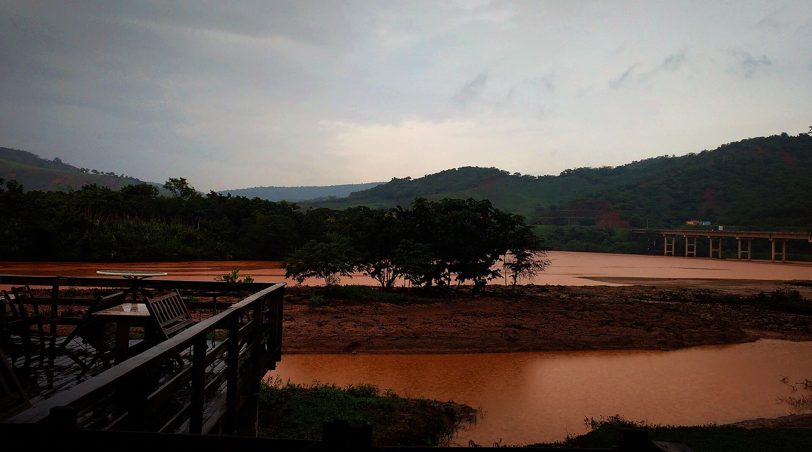
A humanidade
O rio é alguém
Fundão e o Estado
A queda e os paraquedas
Do sonho e da terra
“O rio Doce, que nós, os Krenak, chamamos de Watu, nosso avô, é uma pessoa, não um recurso, como dizem os economistas.”
Krenak, p. 21
Kre, cabeça; nak, terra. Desde novembro de 2015, o avô está em coma.
Figura 8 – O rio Doce em Resplendor (MG), onde fica a Terra Indígena Krenak, dias após a chegada da lama, 2015. Fonte: Kemdi Avelar, Wikimedia Commons (CC BY-SA 4.0)
A humanidade
O rio é alguém
Fundão e o Estado
A queda e os paraquedas
Estudo de caso
5 de novembro de 2015: Fundão
Figura 9 – A pluma de rejeitos do rio Doce entra no Atlântico em Regência (ES), 17 dias depois do rompimento
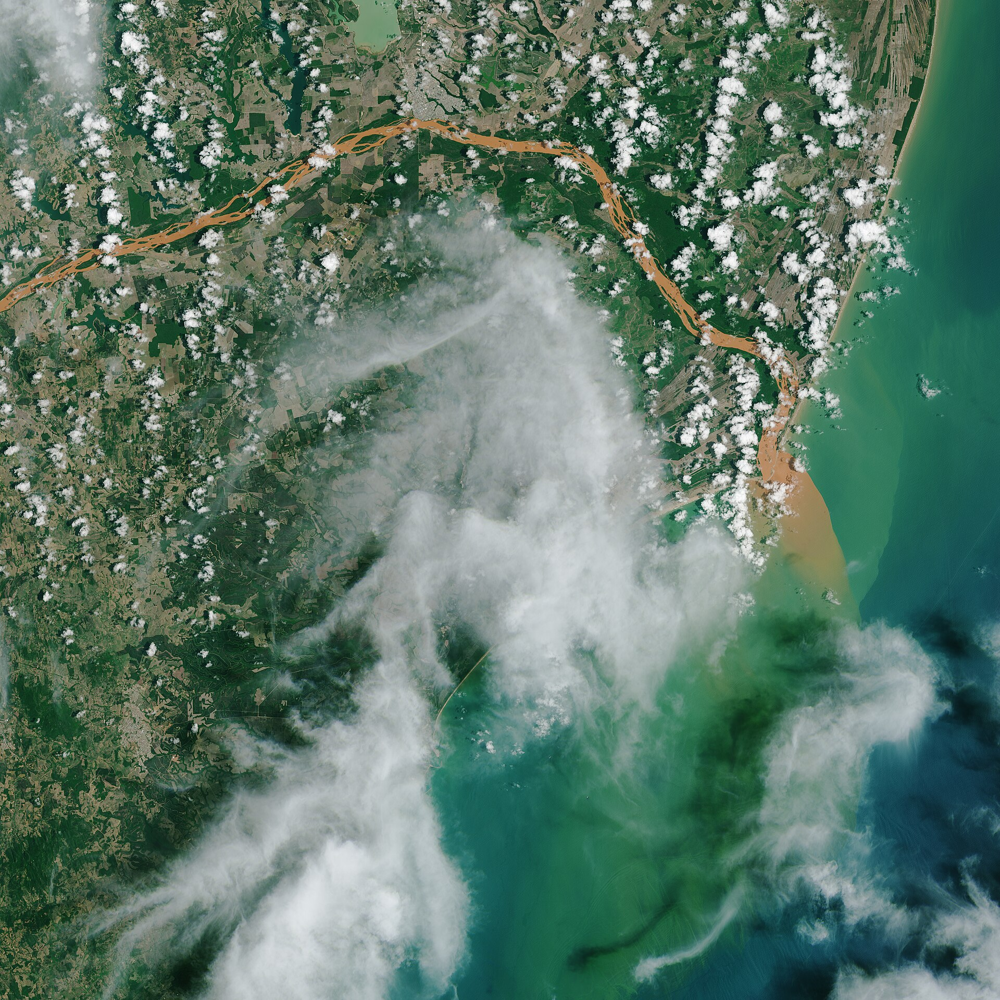
Fonte: NASA Earth Observatory / Landsat 8-USGS, 2015 (domínio público).
≈ 45 mi m³
de rejeitos de minério de ferro (nota da edição, p. 25)
19 mortos
Bento Rodrigues (Mariana) soterrado em minutos
600 km
de rio “coberto por material tóxico” até o ES (p. 21-22)
17 dias
até a lama chegar ao mar, na foz em Regência
Samarco (Vale + BHP). Brumadinho, 2019: 272 mortos. O padrão se repete.
A humanidade
O rio é alguém
Fundão e o Estado
A queda e os paraquedas
Estudo de caso · O percurso
A lama desce o Watu
Mariana (Fundão)
5 nov 2015, 15h30: a barragem se rompe
Governador Valadares
a maior cidade do vale fica dias sem água
Terra Indígena Krenak
Resplendor (MG): aqui o avô entra em coma
Colatina (ES)
também sem abastecimento
Linhares (ES)
Regência (ES)
22 nov: a lama chega ao Atlântico
Esquema sem escala, cerca de 600 km. Para quem mora na margem, não foi em Mariana. Foi em casa.
A humanidade
O rio é alguém
Fundão e o Estado
A queda e os paraquedas
Estudo de caso · Perspectivas
Dois rios: onde um atravessa o outro
recurso hídrico, corpo receptor
Watu, o avô: uma pessoa
“acidente”, “rompimento”
crime
passivo ambiental mensurável
órfãos; o avô em coma
Renova, R$ 170 bi: indenizar “atingidos”
não há como devolver um avô
laudo, turbidez, monitoramento
a serra que avisa; o rio sagrado
antes
5 nov 2015
o dano
a reparação
o saber
Empresa e Estado
Os Krenak
quem conta como “atingido” é decidido aqui em cima
o saber de baixo só sobe como “folclore”, e folclore não entra no laudo
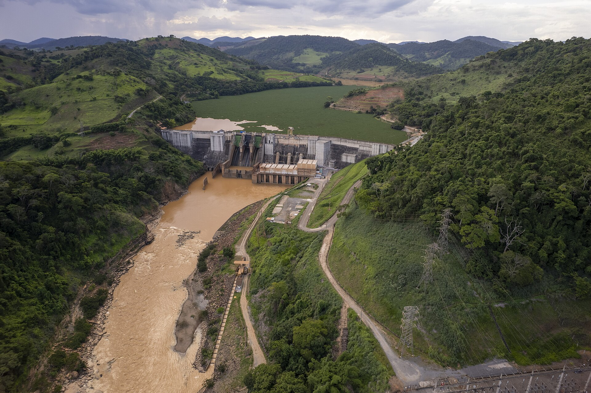
A humanidade
O rio é alguém
Fundão e o Estado
A queda e os paraquedas
A queda
O fim do mundo já aconteceu. Várias vezes.
Figura 10 – Família “botocudo”: o nome que os colonizadores deram aos ancestrais dos Krenak
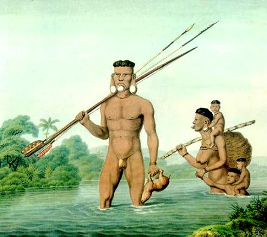
Fonte: Maximilian zu Wied-Neuwied, Viagem ao Brasil, 1815-1817 (domínio público)
séc. XVI
para quem recebeu a visita europeia e morreu, o mundo acabou ali
1808
D. João VI declara “guerra justa” aos botocudos do vale do rio Doce
2015
a lama no Watu: “a real condição de um mundo que acabou”
agora
o desastre que “algumas seletas pessoas chamam Antropoceno”
“O nosso apego a uma ideia fixa de paisagem da Terra e de humanidade é a marca mais profunda do Antropoceno.” (p. 29)
Figura 11 (fundo) – Barragem no rio Doce com o reservatório tomado pela lama, 2015. Fonte: WilliamRobertoMiranda, Wikimedia Commons (CC0)
A humanidade
O rio é alguém
Fundão e o Estado
A queda e os paraquedas
Depois do livro
O Estado e a terra Krenak: 1808 a 2025
Guerra justa aos botocudos: carta régia de D. João VI
1808
Reformatório Krenak: prisão da ditadura dentro da aldeia
1969
Remoção forçada para a Fazenda Guarani (Carmésia)
1972
Constituição: Krenak na Constituinte; o capítulo dos índios
1988
Fundão: o Watu em coma
2015
O livro: “que o governo cumpra seu dever constitucional” (p. 20)
2019
Congresso aprova a Lei 14.701: o marco temporal
2023
TRF6 condena União, Minas e Funai: desculpas públicas e demarcar Sete Salões em 6 meses
abr 2025
STF derruba o marco temporal e dá 10 anos para concluir as demarcações
dez 2025
O Estado que o livro acusa foi, em 2025, condenado a pedir desculpas aos Krenak. A demarcação de Sete Salões segue pendente. “Tem quinhentos anos que os índios estão resistindo” (p. 15).
A humanidade
O rio é alguém
Fundão e o Estado
A queda e os paraquedas
Figura 12 – Ailton Krenak, 2010
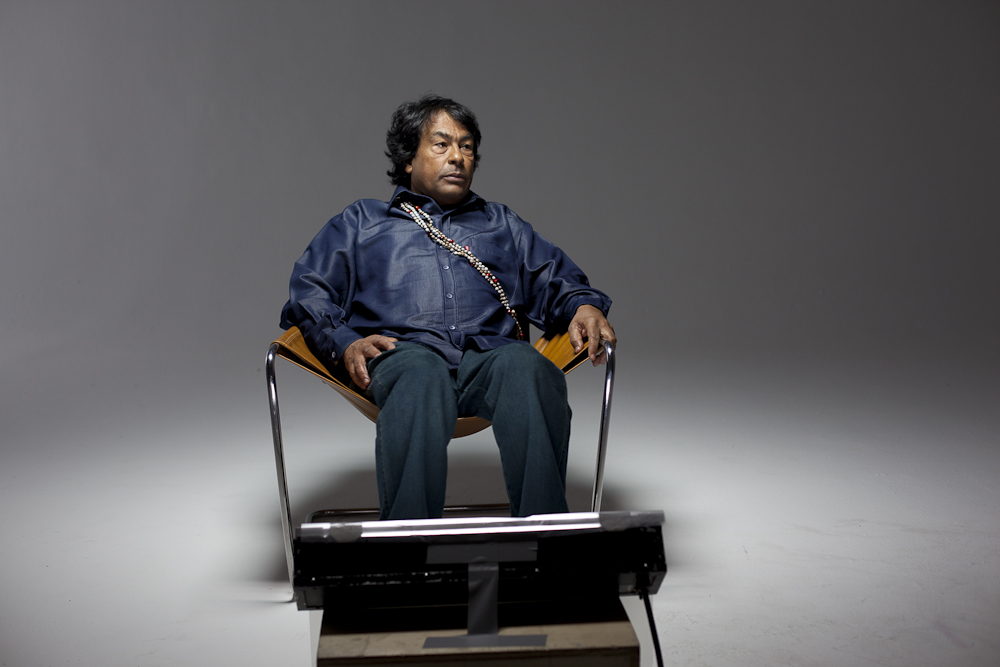
Fonte: Garapa Coletivo Multimídia / Produção Cultural no Brasil (CC BY-SA 2.0)
Do sonho e da terra
De onde se projetam os paraquedas
“Reconhecer essa instituição do sonho não como experiência cotidiana de dormir e sonhar, mas como exercício disciplinado de buscar no sonho as orientações para as nossas escolhas do dia a dia.” (p. 25)
Um lugar que se habita, com iniciação, como uma escola.
Ligado a este mundo, com outra potência. Talvez outro nome para natureza.
Conhecimento que não passa pelo documento.
A humanidade
O rio é alguém
Fundão e o Estado
A queda e os paraquedas
Paraquedas
“A minha provocação sobre adiar o fim do mundo é exatamente sempre poder contar mais uma história.”
Krenak, p. 13
A queda já começou
e ninguém disse que a gente não pode cair
Contar histórias
Enquanto houver mais uma história, o fim fica adiado.
Suspender o céu
Quando o céu baixa demais, empurrar e respirar.
Fabricar paraquedas coloridos
Não eliminar a queda: cair com estilo no cosmos.
A humanidade
O rio é alguém
Fundão e o Estado
A queda e os paraquedas
Cultura e informação
Do modo de vida ao catálogo
Modos de vida: oralidade, sonho, canto, a serra que avisa
Seleção: o que conta como informação?
Descrição: em que língua, com que vocabulário?
Classificação: “folclore”, “recurso hídrico”
Acesso: o catálogo, o laudo, a base de dados
Mediação cultural: as decisões acontecem aqui, e quem decide não é quem vive o modo
o que resiste: contar mais uma história
perde-se: o sonho não é documento
perde-se: a língua foi “deletada”
perde-se: o Watu não tem campo
o que chega: “cultura” empacotada
Krenak: línguas “deletadas” (p. 12); “nosso tempo é especialista em criar ausências” (p. 13); o saber do rio como “folclore deles” (p. 24). O rio Doce tem laudo e acordo bilionário; o Watu não aparece em nenhum deles.
A humanidade
O rio é alguém
Fundão e o Estado
A queda e os paraquedas
Computação · A máquina
Colonialismo de dados: outro minério
Figura 13 – O Colosso de Rhodes: o magnata das minas sobre a África
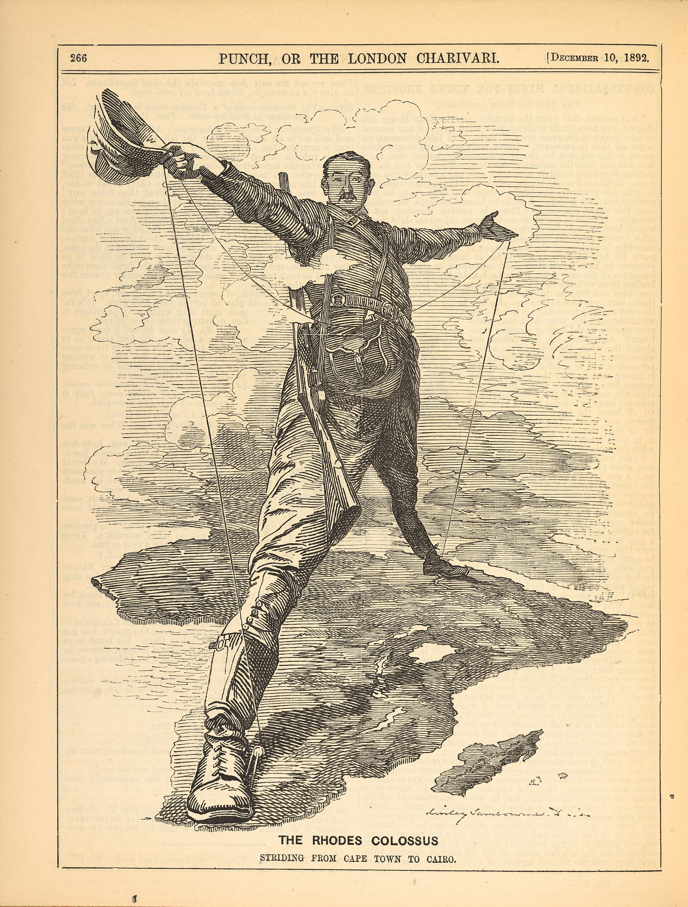
Fonte: Edward Linley Sambourne, Punch, 1892 (domínio público). Rhodes segura um fio de telégrafo: mina e infraestrutura de informação na mesma mão.
A máquina de Krenak (p. 24)
terra, montanha
recurso: minério
extração: barragem, rejeito
mercadoria longe daqui
A máquina de dados (Couldry & Mejias, 2019: colonialismo de dados)
vida, fala, língua
recurso: dados
extração: treino do modelo
produto em outro continente
Borum, a língua dos Krenak: criticamente ameaçada (UNESCO). Na web, quase nada. Para um modelo de linguagem ela foi deletada duas vezes: pelo Estado (p. 12) e pelo corpus. O que não está escrito e online não existe para a máquina.
Outro protocolo: soberania de dados indígena
CARE (GIDA, 2019): benefício coletivo, autoridade para controlar, responsabilidade, ética. Te Hiku Media (Aotearoa): recusou entregar o áudio em maori às big techs e treinou o próprio reconhecedor de fala, sob a licença Kaitiakitanga. O contato entre mundos (p. 25), nos termos de quem fala.
A humanidade
O rio é alguém
Fundão e o Estado
A queda e os paraquedas
Para fechar
Krenak contra Krenak
O “nós”
“Por que insistimos tanto em participar desse clube?” (p. 8)
“Nós, a humanidade, vamos viver em ambientes artificiais” (p. 11)
recusa o clube, mas fala por ele
O fim
“Adiar o fim do mundo é sempre poder contar mais uma história” (p. 13)
“Quem disse que a gente já não caiu?” (p. 29)
adiar a queda, ou aceitar que já caímos?
O Estado
“Que o governo cumpra seu dever constitucional” (p. 20)
“A máquina estatal atua para desfazer as nossas sociedades” (p. 21)
pede ao Estado o que acusa o Estado de destruir
Não são deslizes. Krenak fala de dentro do clube contra o clube, e sabe disso: circular pelo mundo “não como uma metáfora, mas como fricção” (p. 13). A tensão é o jeito de pensar do livro, e é o que a gente leva daqui.
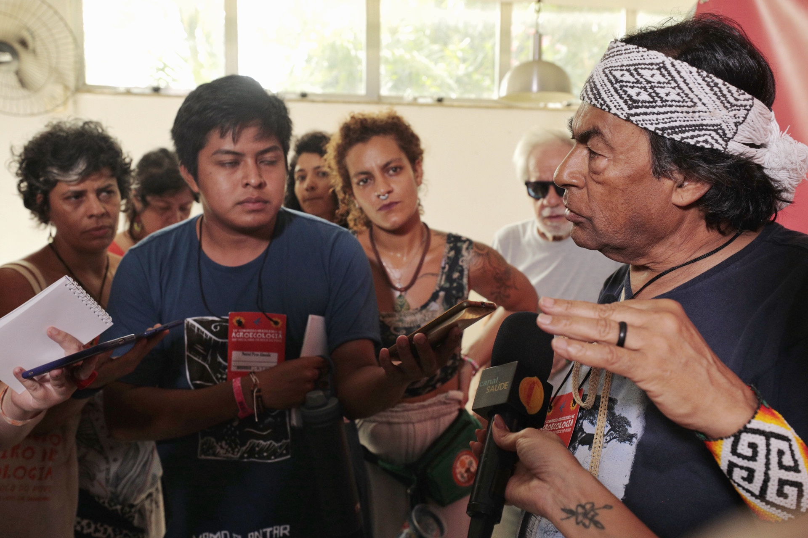
“Se pudermos fazer isso, estaremos adiando o fim.”
Krenak, p. 13 · Obrigado.
KRENAK, A. Ideias para adiar o fim do mundo. Companhia das Letras, 2019 · CASTRO, E. V. Perspectivismo e multinaturalismo na América indígena. O que nos faz pensar, n. 18, 2004 · Global Indigenous Data Alliance, CARE Principles, 2019 · Imagens: Wikimedia Commons (Cleia Viana/Câmara dos Deputados; Garapa Coletivo Multimídia; Kemdi Avelar; WilliamRobertoMiranda; PhotoBilliam; Sophiestolle; Gabriel Picard; Nalilord; Edward S. Curtis/MOPA; ABA-Agroecologia) e NASA.
Figura 14 – Krenak com jovens no 12º Congresso Brasileiro de Agroecologia, 2023. Fonte: ABA-Agroecologia (CC BY-SA 2.0)